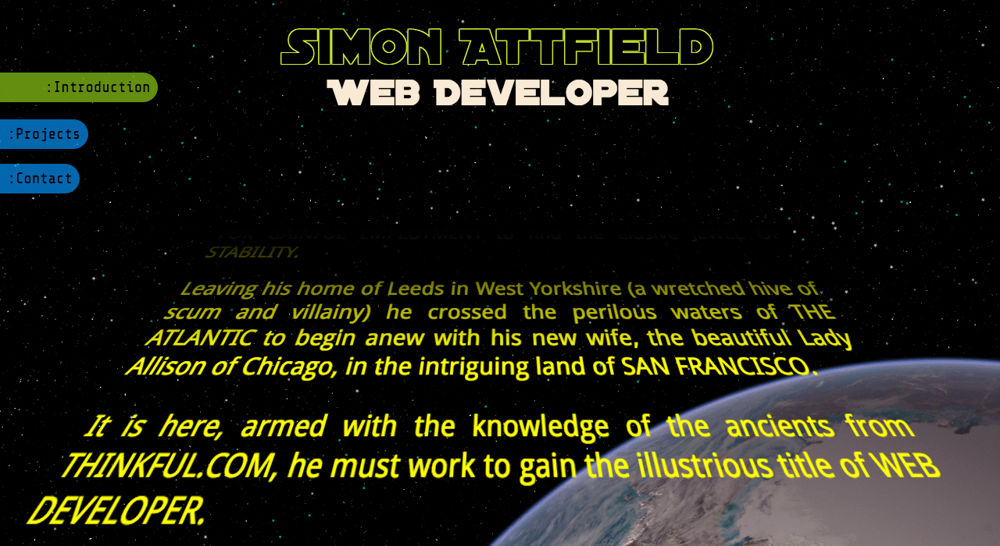
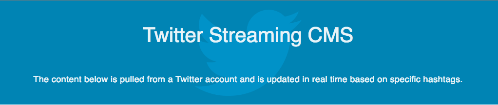
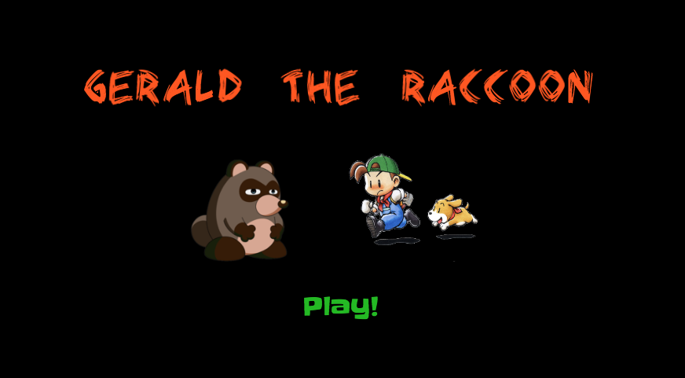

A different take on a portfolio site. The premise was to see how far I could take my CSS skills. No frameworks, no JavaScript, just perpsective and checkboxes with a dangerous amount of absolute positioning (and an overdose of personality thrown in for good measure) all in a Star Wars style.

An experiment to see if website content can be controlled by tweets! This stemmed from my days playing in bands. There was never time to properly update a website, so what if it can be done on the fly?

Team project on developing games in the browser using the canvas element. Because, why not?